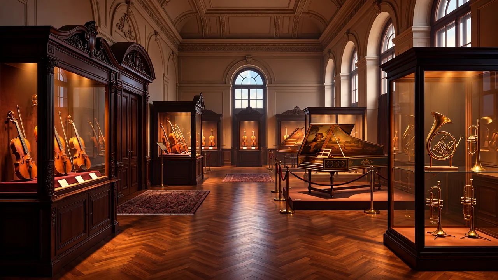

WALAMORT · MUSEO SONORO
Recorridos sonoros y cuaderno de escucha

Escucha con intención, compara y crea. Cada recorrido combina una fuente, tres preguntas y una actividad. Reserva entre 10 y 20 minutos.
Instrumentos, territorios y personas. Recorridos culturales, no un inventario de piezas de la colección.
Fuente de consulta: · 2026-11-01
Los enlaces abren grabaciones y documentos externos. Las versiones virtuales son aproximaciones sintetizadas. No se reproduce audio automáticamente.
Escucha, observa y prueba
La actividad es un ejercicio general de exploración, no una reproducción del estilo tradicional.
Mi cuaderno de escucha
Se guarda automáticamente en este navegador. No se envía a Walamort ni cuenta como nota académica. Evita escribir datos personales.